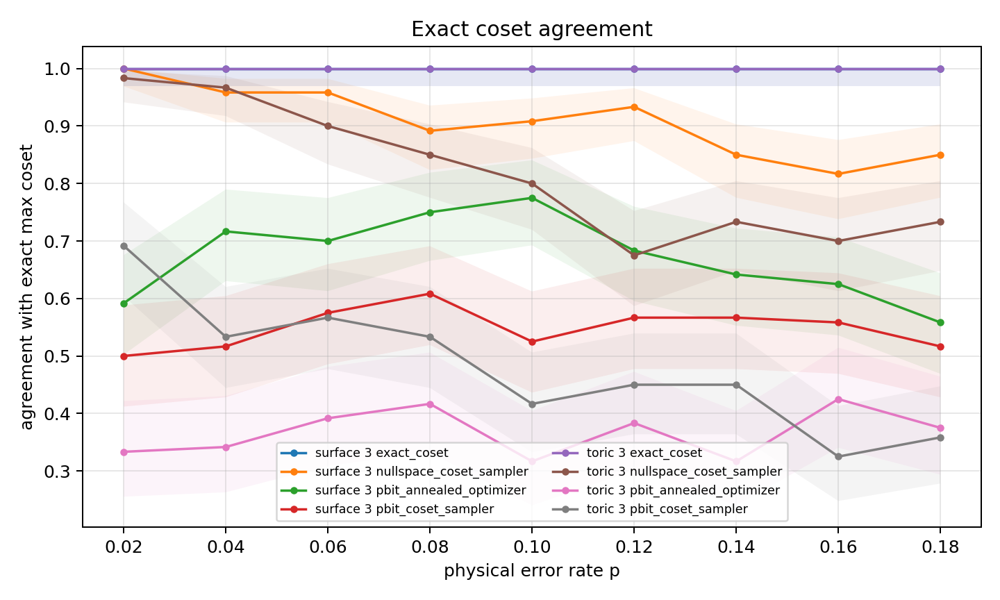
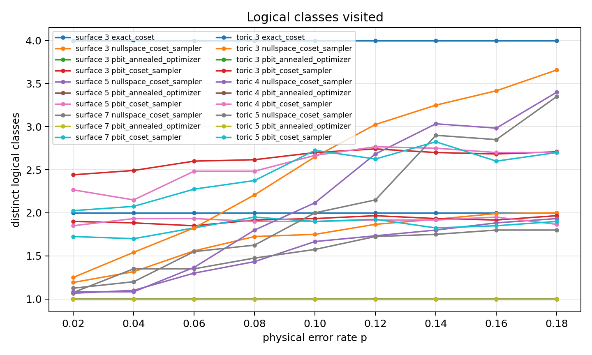
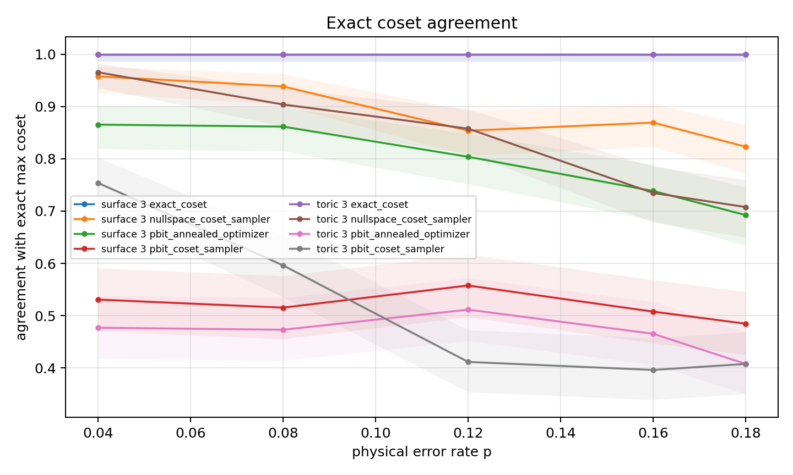
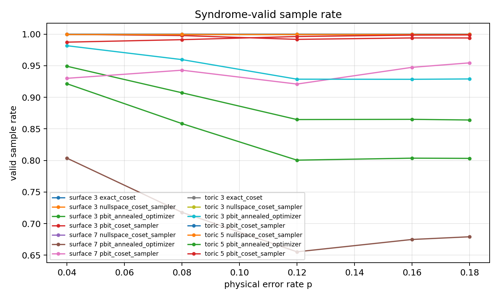

Results So Far
The p-bit sampler now uses the direct stochastic-unit update
P(e_j = 1 | rest, s) = 1 / (1 + exp(beta Delta_j)), where
Delta_j = E(e_j=1) - E(e_j=0). These results are reproducible benchmark
artifacts, not final publication-strength statistical claims.
Current readout: exact coset decoding remains the small-code reference. The precision focus run lifts matching groups to 260 trials each and cuts the p-bit logical-error confidence half-width from about 0.112 to 0.057. The soft p-bit sampler remains slightly better than annealed optimization on focused logical error, but the higher-repeat hard-case recovery run does not support a p-bit hard-case advantage.
All Visuals
v1 Large Sweep






Precision Focus Sweep





Hard-Case Precision

Aggregate Metrics
Mean Logical Error Rate
| Decoder | Mean | Mean CI Half-Width |
|---|---|---|
| exact_coset | 0.203 | 0.063 |
| nullspace_coset_sampler | 0.300 | 0.098 |
| pbit_coset_sampler | 0.487 | 0.113 |
| pbit_annealed_optimizer | 0.529 | 0.113 |
Mean Exact-Coset Agreement
| Decoder | Mean | Mean CI Half-Width |
|---|---|---|
| exact_coset | 1.000 | 0.016 |
| nullspace_coset_sampler | 0.862 | 0.056 |
| pbit_annealed_optimizer | 0.519 | 0.083 |
| pbit_coset_sampler | 0.514 | 0.087 |
Precision Focus Mean Logical Error Rate
| Decoder | Mean | Mean CI Half-Width |
|---|---|---|
| exact_coset | 0.251 | 0.047 |
| nullspace_coset_sampler | 0.335 | 0.052 |
| pbit_coset_sampler | 0.485 | 0.057 |
| pbit_annealed_optimizer | 0.498 | 0.057 |
Precision Focus Mean Exact-Coset Agreement
| Decoder | Mean | Mean CI Half-Width |
|---|---|---|
| exact_coset | 1.000 | 0.007 |
| nullspace_coset_sampler | 0.861 | 0.040 |
| pbit_annealed_optimizer | 0.630 | 0.054 |
| pbit_coset_sampler | 0.516 | 0.059 |
Mean Hard-Case Exact-Coset Recovery
| Decoder | Overall Mean | 95% CI |
|---|---|---|
| nullspace_coset_sampler | 0.445 | [0.417, 0.473] |
| pbit_coset_sampler | 0.435 | [0.407, 0.463] |
| pbit_annealed_optimizer | 0.426 | [0.398, 0.455] |
High-Precision Hard-Case Exact-Coset Recovery
| Decoder | Recovered / Attempts | Overall Mean | 95% CI |
|---|---|---|---|
| nullspace_coset_sampler | 1747 / 3776 | 0.463 | [0.447, 0.479] |
| pbit_annealed_optimizer | 1731 / 3776 | 0.458 | [0.443, 0.474] |
| pbit_coset_sampler | 1639 / 3776 | 0.434 | [0.418, 0.450] |
Mean Valid-Sample Rate
| Decoder | v1 Large Mean | Precision Focus Mean |
|---|---|---|
| exact_coset | 1.000 | 1.000 |
| nullspace_coset_sampler | 1.000 | 1.000 |
| pbit_coset_sampler | 0.976 | 0.982 |
| pbit_annealed_optimizer | 0.844 | 0.845 |
Interpretation remains conservative: the precision focus run reduces uncertainty enough to support a small logical-error advantage for the soft p-bit sampler over annealed optimization in these configured groups. The high-repeat hard-case run points the other way: p-bit sampling is below both nullspace sampling and annealed optimization on exact max-coset recovery. This is a useful negative result, not a failed artifact.
Calibration note: an affine warm-start option was tested against the mined hard cases, but it did not beat the current published p-bit hard-case recovery baseline in the bounded check. The benchmark settings therefore remain unchanged for this artifact.